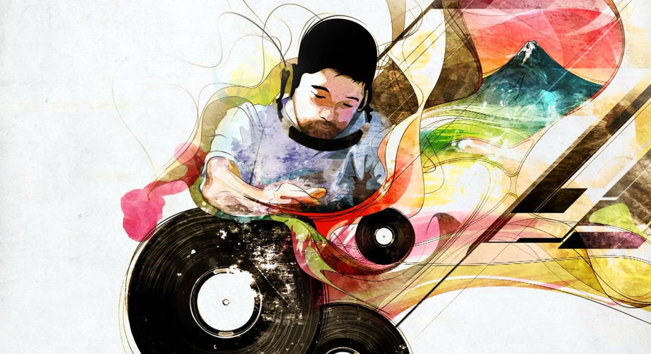

Nujabes - ヌジャベス

Jun Seba better known by his stage name Nujabes (ヌジャベス), was a Japanese record producer, audio engineer, DJ, composer and arranger best known for his atmospheric instrumental mixes sampling from hip hop, soul, and jazz, as well as incorporating elements of trip hop, breakbeat, downtempo, and ambient music.
Jun Seba better known by his stage name Nujabes (ヌジャベス), was a Japanese record producer, audio engineer, DJ, composer and arranger best known for his atmospheric instrumental mixes sampling from hip hop, soul, and jazz, as well as incorporating elements of trip hop, breakbeat, downtempo, and ambient music.
About Nujabes
The life of Seba Jun
Seba released two studio albums during his lifetime: Metaphorical Music (2003) and Modal Soul (2005), while the album Spiritual State was released posthumously in 2011. He was the founder of the independent label Hydeout Productions and released two collection compilations: Hydeout Productions 1st Collection (2003) and 2nd Collection (2007). Additionally, Seba collaborated on the soundtrack for Shinichirō Watanabe's anime series Samurai Champloo (Music Record: Departure and Impression) in 2004.Seba adopted the stage name Nujabes (his name spelled backwards) and became notable for his approach to producing hip hop beats, often blending jazz influences into his songs creating a mellow, nostalgic and atmospheric sound. He is considered a pioneer of lo-fi hip hop, or "chillhop". Seba collaborated with Japanese artists like Uyama Hiroto, Shing02, L-Universe, and Minmi, and with various underground American hip hop acts such as CYNE, Cise Starr (as a solo apart from the hip-hop collective CYNE), Apani B, Five Deez, Substantial, CL Smooth, Fat Jon, Terry Callier as well as British rapper Funky DL. Seba was also a member of the production duo Urbanforest, an experimental collaboration with Nao T. Seba collaborated with Shing02 on the critically acclaimed Luv(sic) hexalogy, making the parts 1-3 together, but after Seba died unexpectedly many doubted that the series could ever be completed. However, parts 4 and 5 had already been completed, which were released shortly after Seba's death. Part 6 was not among the previously completed tracks, but it was released on February 26, 2013, on the third anniversary of Seba's death. According to Shing02's official Facebook page, the instrumental to what would eventually be part 6 was discovered on Seba's cell phone a few weeks after his death.
Seba was one of the most prolific contributors to the soundtrack of the critically acclaimed anime series Samurai Champloo, which blends a feudal Japanese setting with modern anachronisms, especially in regard to hip hop culture such as graffiti and rapping.
The Legacy of Nujabes
⁍ On February 26, 2010, Seba was involved in a traffic collision upon exiting the Shuto Expressway at 22:14. He was pronounced dead at a hospital in Shibuya Ward after efforts to revive him failed. His grave is located within the Japanese section of Tama Cemetery.⁍ Seba's death elicited many tributes from other artists around the world. On Bandcamp, the New York-based Digi Crates records released a series of tribute albums performed by various artists in a style reminiscent of Seba's. Seba's label Hydeout Productions released a tribute album titled Modal Soul Classics II featuring a number of former collaborators and with lyrics and song titles that reference Seba's work.
⁍ Frequent collaborator Shing02 remarked, "Through his soulful music, Nujabes has touched so many people around the world, even beyond his dreams", and "I deeply regret the loss of a unique talent and a close friend." Shing02 has also performed at tribute concerts for Seba.
⁍ In 2018, American rapper Logic mentioned Nujabes in the track "Thank You" from his album YSIV, saying "I had to write this over a Nujabes vibe", referencing the production style of the track, which is reminiscent of Nujabes' music. In 2020, Logic cited Nujabes as a key inspiration behind his production style alongside MF DOOM, RZA and Kanye West in the track "Perfect" from his album No Pressure.
⁍ On 26 July 2019, Otakon held a tribute concert in Washington, D.C., featuring Shing02, MINMI, Substantial, Marcus D and EyeQ.
⁍ In 2022, the video game Stray featured track Counting Stars as a part of collectible sheet music pages.
Regarded as the father of lofi hiphop, a critically acclaimed genre which has been losing popularity due to the fast-paced nature of a human's lifetime, Seba Jun taught us that slowing down and feeling the scenery, sounds and nature around us can be a pricelss moment, which many people does not experience
For More information, check out Nujabes on Wikipedia.
Page developed by varun-desu-yo